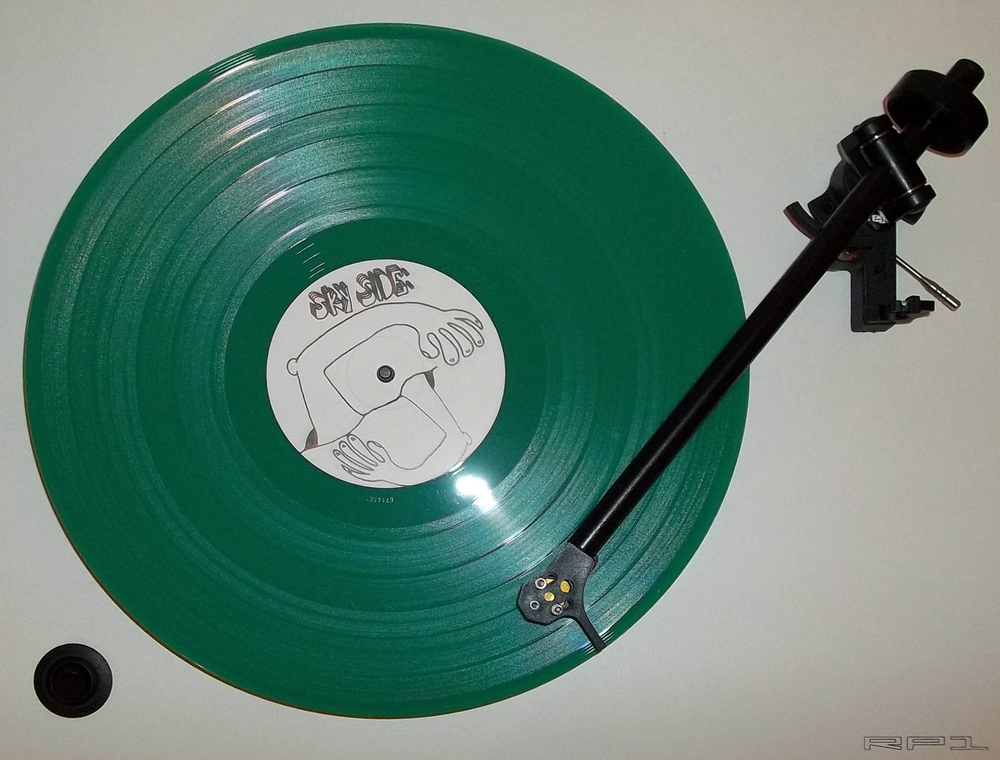

Interests
I am obsessed with music. I love listening to music, performing music, recording music, learning about music, and collecting music.
Music Performance and Theory
I am always trying to learn more about music theory and performance techniques. Some of my favorite sites for learning more about performing and recording music are:
I also enjoy discovering and utilizing new music gear (as referenced by the guitar effects pedals in the header image). My favorite resource for checking out new guitar gear is ProGuitarShop. Here is one of my favorite pedal reviews they've made:
Although I don't currently play in any sort of band setting, the last "band" I played in was called The Vibes. In The Vibes, I primarily played bass, recorded, and mixed audio. Here is a short clip of a song we improvised, called "Streetlamps":
Record Collecting
I also enjoy collecting vinyl records. It can be a very expensive hobby, but I find joy in finding amazing deals when searching out new records for my collection. My favorite places in the Seattle area to search for records are: